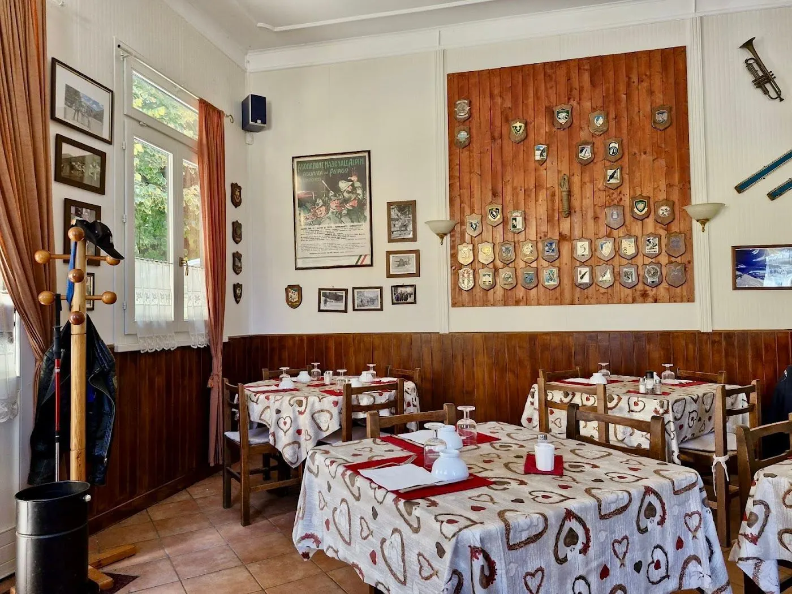

Entra, che è pronto.
Polenta, salumi, carni cotte a lungo: la cucina di una volta, in una casetta di legno piena di ricordi alpini.
4,5 su Google · 682 recensioni (ottobre 2026)

Sito dimostrativo
 Prenota
Prenota
Polenta, salumi, carni cotte a lungo: la cucina di una volta, in una casetta di legno piena di ricordi alpini.
4,5 su Google · 682 recensioni (ottobre 2026)
